Minnesbild · Cellen
Tänk på cellen som en fabrik
Allt i genetiken händer inne i cellen. Tryck på ett namn för att se vad delen gör och vad den motsvarar i en fabrik.
Varför? Liknelsen gör det lättare att minnas vad delarna gör. På provet skriver du cellens ord, inte fabrikens.
Djurcell
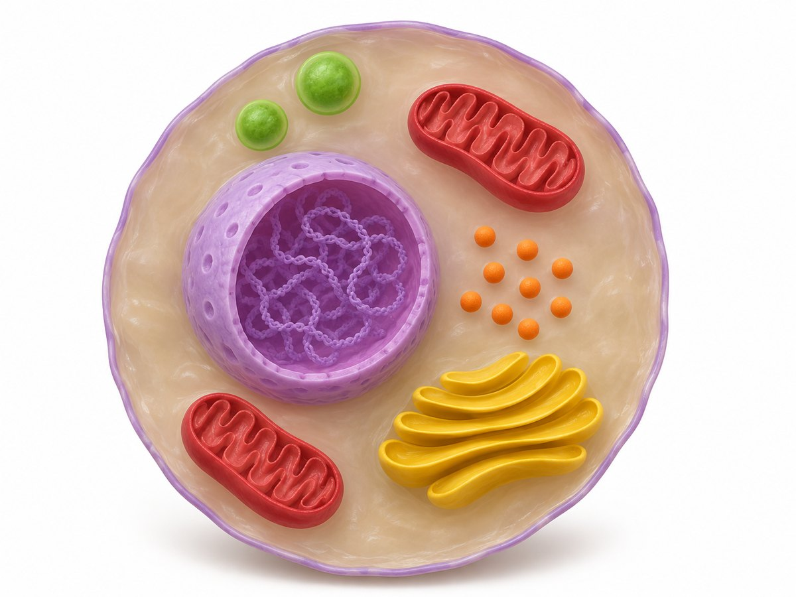
Tryck på ett namn i bilden.
Växtcell
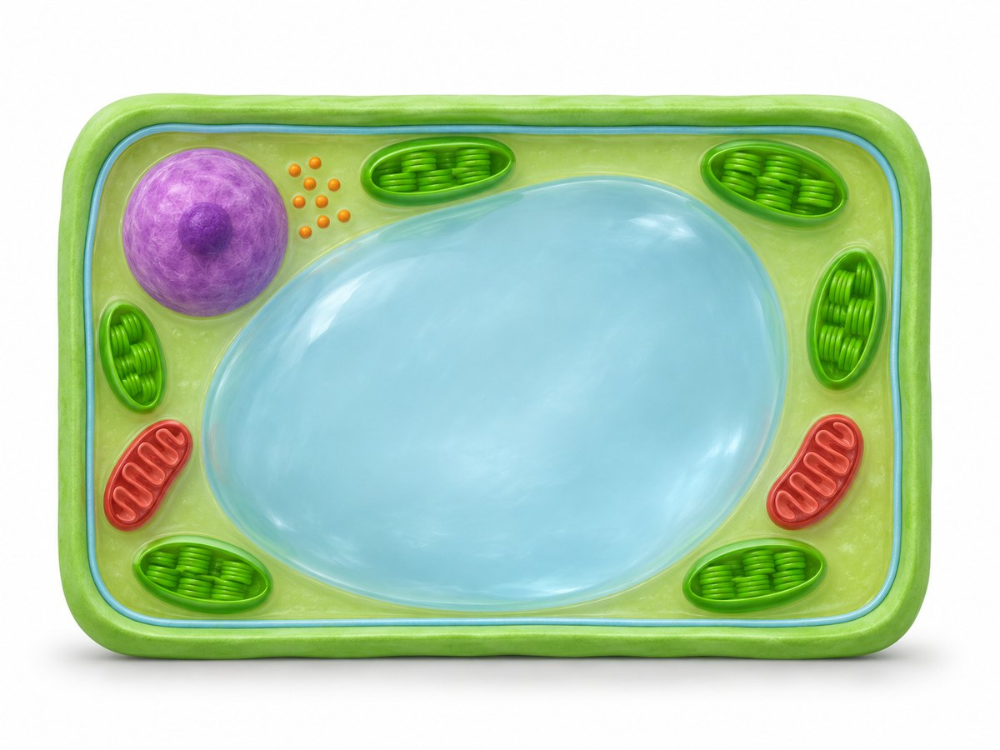
Tryck på ett namn i bilden.
Vilken del?
Välj den del av cellen som stämmer.
Område 1 · DNA-molekylen
Hur ser DNA-molekylen ut?
- DNA-molekylen ser ut som en vriden repstege.
- Stegens två sidor kallas strängar.
- Pinnarna mellan dem är baspar.
- Formen kallas dubbelspiral.
- Varför: formen gör att strängarna kan delas från varandra och kopieras, och att den långa molekylen kan packas tätt.
Samma bit DNA, först vriden och sedan uträtad.
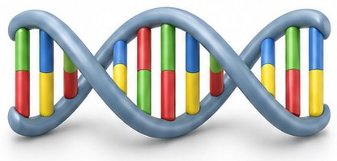
Dubbelspiral
DNA är en mycket lång molekyl, formad som en repstege som är vriden runt sig själv.
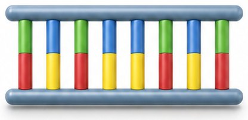
Stegen uträtad
Stegens två långa sidor kallas strängar, och pinnarna mellan dem kallas baspar.
Vad kallas delen?
Välj rätt ord.
Vad består stegens pinnar av, och vilka kvävebaser sitter ihop?
- Stegens pinnar består av kvävebaser.
- Kvävebaserna sitter ihop två och två i baspar.
- A sitter alltid ihop med T, och C alltid med G.
- Varför: eftersom varje bas bara passar med en enda annan räcker den ena strängen för att bygga den andra. Därför kan DNA kopieras nästan utan fel.
Titta närmare på en pinne i stegen.
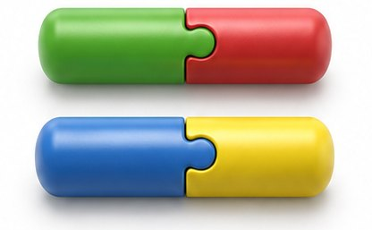
Två halvor som passar ihop
Varje pinne är två kvävebaser som hakar i varandra som pusselbitar.
A sitter alltid ihop med T
Adenin och tymin. I bilden är de gröna och röda.
C sitter alltid ihop med G
Cytosin och guanin. I bilden är de blå och gula.
Vilken bas passar?
Välj den kvävebas som sitter på andra halvan av pinnen.
Skriv den andra strängen
Ena strängen har baserna nedan. Skriv baserna på den andra strängen, i samma ordning.
Hur kan fyra bokstäver räcka till så mycket information?
- Fyra bokstäver räcker eftersom det är ordningen på dem som bär informationen.
- Bokstäverna är kvävebaserna A, T, C och G.
- Ordningen kan varieras nästan hur mycket som helst, precis som R, O och T kan bli både ROT, ORT och TRO.
- Varför det behövs: allt levande behöver recept på tusentals olika proteiner, och alla måste rymmas i DNA.
Jämför med hur vanliga bokstäver fungerar.
Samma bokstäver, olika ord
Tre bokstäver kan bli flera ord. Det är ordningen som avgör vad det betyder.
DNA har fyra bokstäver
De fyra kvävebaserna A, T, C och G är DNA:s alfabet.
Ordningen bär informationen
Två bitar DNA med samma baser i olika ordning innehåller olika information.
Antalet möjligheter växer snabbt
Varje plats kan ha fyra olika baser, så redan korta sekvenser kan se ut på väldigt många sätt.
Hur många olika sekvenser?
Varje plats i sekvensen kan vara A, T, C eller G.
Till exempel AT eller GG.
Till exempel ATC.
Vad står det i DNA-sekvenserna?
- I DNA-sekvenserna står det recept på det som kroppen ska bygga, till exempel proteiner.
- En DNA-sekvens är en bit av DNA där baserna står i en viss ordning.
- Det är ordningen på baserna som är själva receptet.
- Samma i alla celler: nästan alla celler i kroppen har alla recepten, men varje cell läser bara dem den behöver.
- Varför: en cell kan inte bygga något utan instruktion, och det är receptet som avgör vilket protein det blir.
Kroppen bygger nya saker hela tiden, och den behöver veta hur.

Kroppen bygger
Färgämne i huden när du solar, protein i en muskel när du tränar och insulin i bukspottkörteln när du har ätit. De tre cellerna har samma DNA, men de läser olika recept.
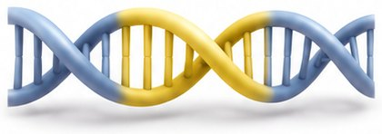
Receptet står i DNA
För varje sak finns en DNA-sekvens, en bit av DNA där basernas ordning fungerar som ett recept. Ett recept kan vara flera tusen baser långt.
Skriv själv
Vad skulle hända om en cell inte kunde läsa sitt DNA? Förklara i flera led.
- Cellen skulle inte komma åt recepten i DNA-sekvenserna.
- Utan recept kan den inte bygga några proteiner.
- Det leder till att cellen varken kan bygga upp sig själv eller sköta sitt arbete.
- Därför kan en cell inte leva utan att kunna läsa sitt DNA.
Vad är arvsmassa, och hur får den plats i cellen?
- Arvsmassan är allt DNA hos en organism, drygt tre miljarder baspar.
- Den ligger i cellkärnan.
- Vilka celler: nästan alla celler i kroppen har hela arvsmassan, alltså exakt samma DNA. Undantaget är könscellerna, som bara har hälften.
- Den får plats i cellen eftersom DNA-tråden är virad runt proteiner och tätt packad.
Zooma in från en hel cell till DNA-tråden.
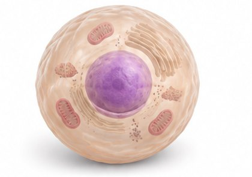
Cellen
Nästan varje cell i kroppen har en cellkärna.
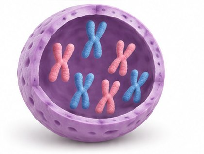
Cellkärnan
Här ligger arvsmassan, allt DNA, uppdelat på 46 kromosomer. Bilden visar sex av dem.
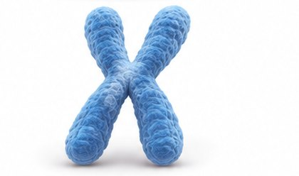
En kromosom
En kromosom är en enda mycket lång DNA-tråd som är virad runt proteiner och tätt packad.
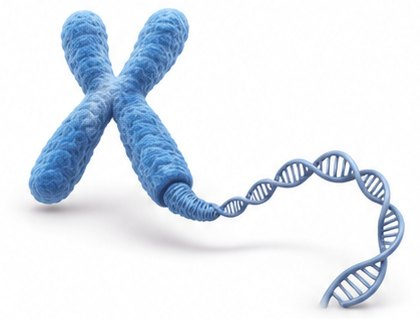
Tråden rullas upp
Rullar man upp kromosomen ser man DNA-spiralen. Allt DNA i en enda cell är ungefär två meter långt.
Var finns det?
Välj rätt plats i cellen.
Område 2 · Gener och kromosomer
Vad är en gen?
- En gen är en bit av DNA.
- Den är ett recept på något som kroppen ska bygga.
- Gener kallas också arvsanlag och styr mycket av våra egenskaper.
- Varför människor är olika: generna finns i olika varianter, och vilka du har fått avgör till exempel om du får fräknar.
Följ en egenskap, fräknar, hela vägen in till DNA.
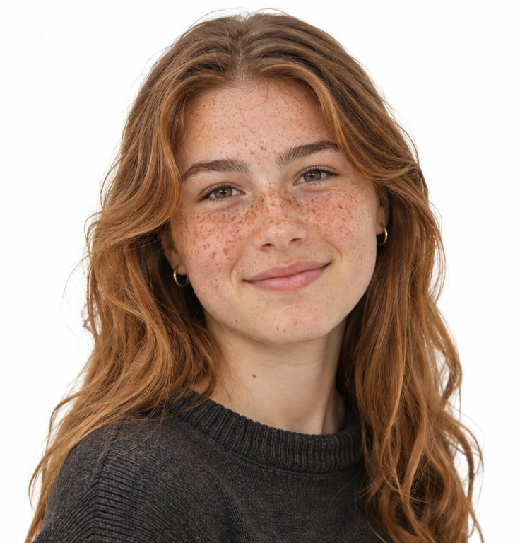
En egenskap
En del har fräknar, andra har det inte.
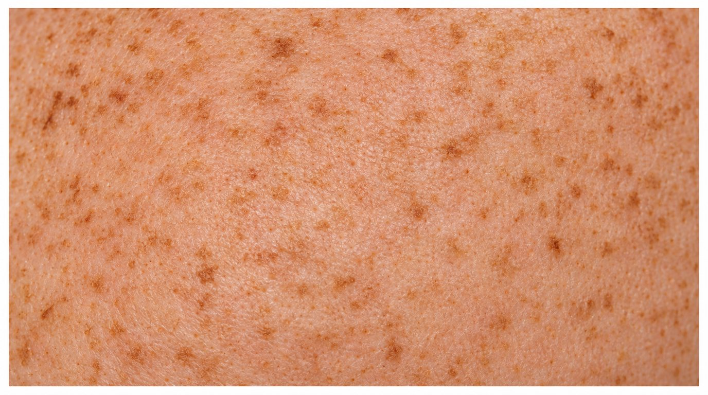
Närbild på huden
En fräkne är en liten fläck där huden har extra mycket färgämne.
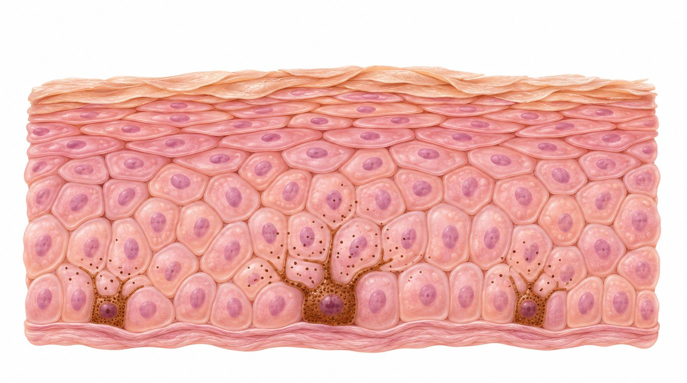
Hudens celler
Cellerna längst ner gör färgämnet, och de följer ett recept i sitt DNA.
Genen
Receptet är en gen, en bit av DNA-tråden. Här är genen gul.
Vad stämmer?
Välj rätt fortsättning.
Hur många kromosomer har en människa?
- En människa har 46 kromosomer i varje kroppscell.
- De bildar 23 par.
- Varför par: i varje par kommer en kromosom från mamma och en från pappa, så du har två varianter av varje gen.
Överst alla kromosomerna i en kroppscell. Under ser du var paren kommer ifrån.
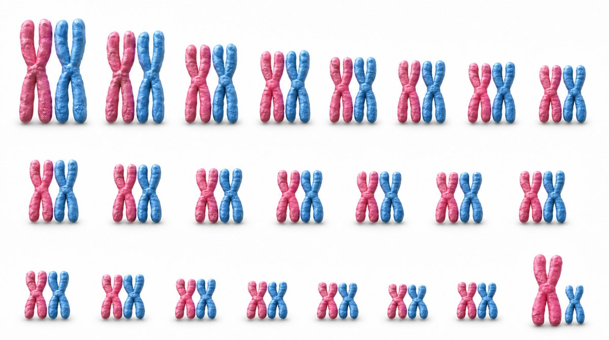
Kromosomerna ordnade i par efter storlek. Det sista paret, för sig självt, är könskromosomerna: två X hos flickor, ett X och ett litet Y hos pojkar.
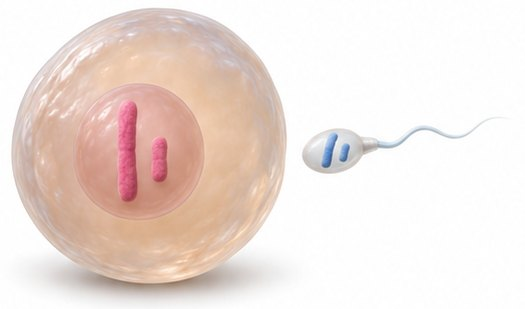
Äggcell och spermie
Könscellerna har 23 kromosomer var. Bilden visar två av dem.
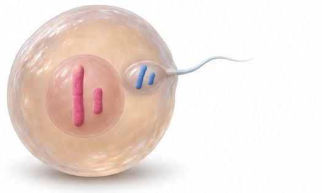
Spermien tar sig in
Spermien lämnar sina kromosomer i äggcellen.
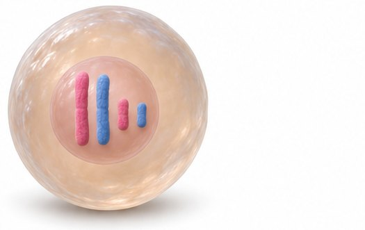
Det befruktade ägget
23 + 23 blir 46 kromosomer, som bildar 23 par.
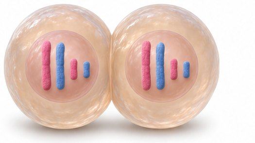
Cellen delar sig
Genom vanlig celldelning får sedan alla kroppens celler samma 46 kromosomer.
Hur många kromosomer?
Välj rätt antal.
En vanlig kroppscell.
En könscell.
Äggcell och spermie har smält ihop.
Område 3 · DNA:s två uppgifter
Vilka två uppgifter har DNA?
- DNA har två uppgifter: att lagra och kopiera informationen, och att tillverka protein.
- Den första betyder att DNA bär alla recept och kopieras varje gång en cell delar sig.
- Den andra betyder att generna används som recept när cellen bygger proteiner.
- Varför båda: informationen måste finnas kvar i varje ny cell, och den måste kunna användas för att cellen ska kunna bygga något.
DNA gör två saker i cellen.
Lagra och kopiera
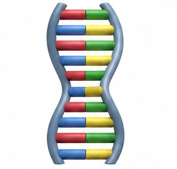
DNA bär alla recept och kopieras varje gång en cell delar sig.
Tillverka protein
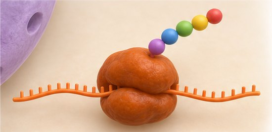
Generna används som recept när cellen bygger proteiner. Se nästa fråga.
Så kopieras DNA
Följ en bit av stegen.
DNA före kopieringen
Varje pinne är ett baspar: A med T och C med G.
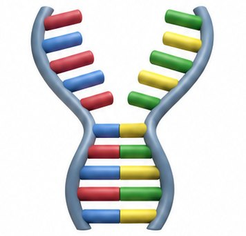
Stegen öppnas
Basparen släpper taget om varandra och stegen delar sig på mitten, som ett blixtlås.
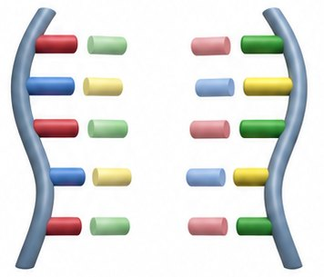
Nya baser fäster
Lösa baser fäster på båda halvorna, och varje plats kan bara fyllas på ett sätt.
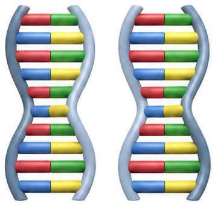
Två likadana DNA-molekyler
Båda har baserna i exakt samma ordning som originalet.
Vilken uppgift?
Välj den uppgift som DNA utför.
Den nya cellen behöver hela arvsmassan.
Den behöver mer muskelprotein.
Var bildas proteinerna, och hur går proteinsyntesen till?
- Proteinerna bildas i ribosomerna, utanför cellkärnan.
- Proteinsyntesen går till så att en kopia av en gen först görs inne i cellkärnan.
- Kopian lämnar cellkärnan och kommer till en ribosom.
- Ribosomen läser kopian och kopplar ihop aminosyror i rätt ordning.
- Kedjan av aminosyror blir ett protein.
- Varför en kopia: DNA ligger skyddat i cellkärnan och lämnar den aldrig, så det är kopian som skickas ut till ribosomen.
Följ ett recept från genen till det färdiga proteinet. Tänk på cellen som en fabrik.
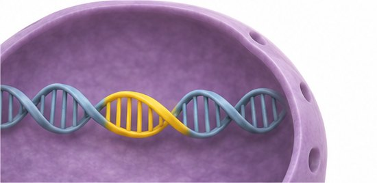
Genen är receptet
I cellkärnan ligger DNA, och den gula biten är en gen.I fabriken: ritningen som förvaras på kontoret.
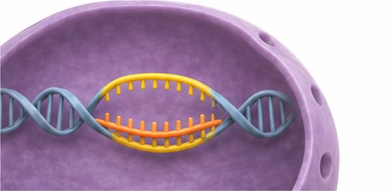
Genen kopieras
DNA öppnar sig vid genen och en kopia byggs, här orange.I fabriken: ritningen kopieras, originalet stannar kvar.
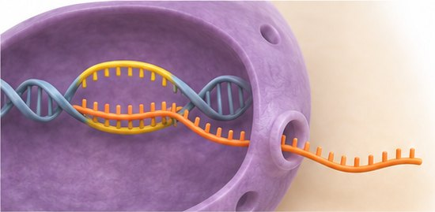
Kopian lämnar cellkärnan
Kopian tar sig ut genom ett hål i cellkärnans vägg.I fabriken: kopian skickas ut i verkstaden.
Ribosomen läser kopian
Ribosomen läser tre baser i taget, och varje sådan triplett står för en aminosyra som kopplas på kedjan.I fabriken: maskinen bygger del för del efter ritningen.
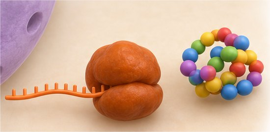
Proteinet är klart
Kedjan av aminosyror viker ihop sig till ett färdigt protein.I fabriken: den färdiga produkten.
Sätt stegen i rätt ordning
Tryck på stegen i den ordning de sker.
Din ordning
Område 4 · Celldelning
Vad händer vid vanlig celldelning?
- Vid vanlig celldelning, mitos, blir en cell två likadana celler.
- Först kopieras allt DNA.
- Sedan dras de två halvorna av varje kromosom isär.
- Till sist delar sig cellen, och båda cellerna får 46 kromosomer.
- Var: överallt där kroppen behöver nya celler, till exempel i huden, benmärgen och skelettet.
- När: när cellerna runt omkring signalerar att det behövs fler, alltså när du växer, när ett sår läker och när gamla celler slits ut. De nya cellerna får exakt samma DNA som de gamla.
Följ kromosomerna genom mitos. Modellcellen har 4 kromosomer, en människocell har 46.
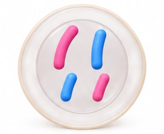
Före delningen
Cellen har sina kromosomer i cellkärnan.
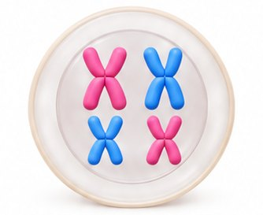
DNA kopieras
Varje kromosom får en likadan kopia, och de två sitter ihop som ett X.
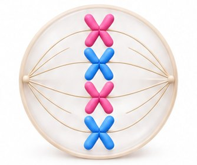
Kromosomerna radas upp
Cellkärnan löses upp, kromosomerna lägger sig på rad i mitten och trådar fäster i dem.
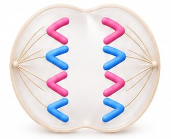
Halvorna dras isär
Trådarna drar en kopia av varje kromosom åt vardera hållet.
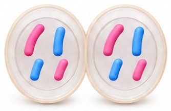
Cellen delar sig
Cellen snörs av på mitten och en ny cellkärna bildas i varje del.
Sätt stegen i rätt ordning
Tryck på stegen i den ordning de sker.
Din ordning
Vad händer vid reduktionsdelning?
- Vid reduktionsdelning, meios, bildas könsceller med hälften så många kromosomer.
- Först kopieras allt DNA.
- I första delningen dras kromosomparen isär, så att antalet halveras från 46 till 23.
- I andra delningen dras halvorna isär.
- Resultatet är fyra könsceller med 23 kromosomer var. Arvsmassan har blandats, så alla är unika.
- Var: bara i könskörtlarna, alltså testiklarna och äggstockarna.
- Varför: om könscellerna hade 46 kromosomer skulle barnet få 92. Med 23 i varje ger ägg och spermie tillsammans 46, och blandningen gör att syskon blir olika.
Följ paren genom meios. Rosa kromosomer kommer från mamma, blå från pappa.
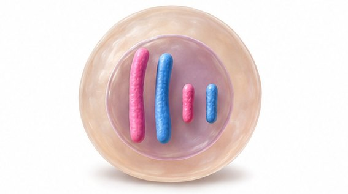
Före delningen
Kromosomerna hör ihop i par, med en från mamma och en från pappa i varje par.
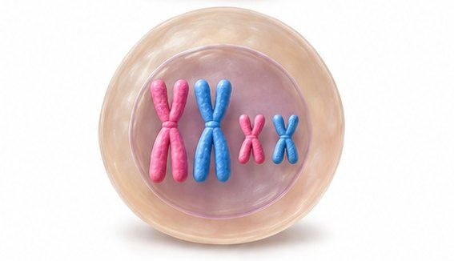
DNA kopieras
Varje kromosom får en likadan kopia, precis som vid vanlig celldelning.
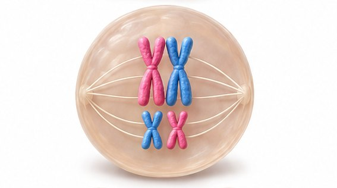
Paren lägger sig bredvid varandra
De som hör ihop lägger sig parvis i mitten, och trådar fäster i dem.
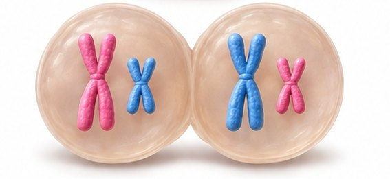
Första delningen
Hela kromosomer dras isär, en från varje par, och slumpen avgör vilken som hamnar var.
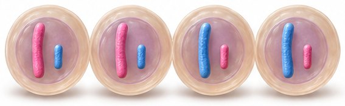
Andra delningen
Båda cellerna delar sig en gång till, och nu dras kopiorna isär.
Skriv själv
Varför måste antalet kromosomer halveras när könsceller bildas? Förklara i flera led.
- En kroppscell har 46 kromosomer.
- Vid befruktningen läggs äggcellens och spermiens kromosomer ihop.
- Om könscellerna hade 46 var skulle barnet få 92, och antalet skulle fördubblas i varje generation.
- Därför halveras antalet till 23, så att ägg och spermie tillsammans ger 46.
Vad är skillnaden mellan vanlig celldelning och reduktionsdelning?
- Skillnaden är vilka celler som bildas, hur många kromosomer de får och om de blir lika.
- Vanlig celldelning ger kroppsceller, reduktionsdelning ger könsceller.
- Vanlig celldelning ger celler med 46 kromosomer, reduktionsdelning ger celler med 23.
- Vanlig celldelning ger två likadana celler, reduktionsdelning ger fyra som alla är olika.
- Varför två sorter: kroppen behöver kopior av sina egna celler för att växa och läka, och könsceller med halva antalet för att kunna få barn.
Båda modellcellerna börjar med fyra kromosomer.
Vanlig celldelning
Mitos. När kroppen växer eller läker.
En delning2 likadana celler
Hos människan får varje ny kroppscell 46 kromosomer.
Reduktionsdelning
Meios. När könsceller bildas.
Två delningar4 olika könsceller
Hos människan får varje könscell 23 kromosomer.
Vilken delning behövs?
Välj ett svar för varje fall.
Huden behöver nya celler.
Den ska kunna befrukta ett ägg.
Skelettet behöver fler celler.
Den ska kunna befruktas.
Område 5 · Arv och korsningsschema
Vad är dominanta och vikande anlag?
- Ett dominant anlag slår alltid igenom och skrivs med stor bokstav, F.
- Ett vikande anlag, som också kallas recessivt, syns bara om man har fått det från båda föräldrarna. Det skrivs med liten bokstav, f.
- Varför: alla har två anlag för varje egenskap, ett från varje förälder. När de säger olika saker är det det dominanta som bestämmer.
- Därför ger FF och Ff fräknar, medan ff ger inga.
Följ anlaget för fräknar från föräldrarna till barnet. Det bruna bandet är anlaget för fräknar.
Föräldrarna
Mamma har fräknar, pappa har inga.
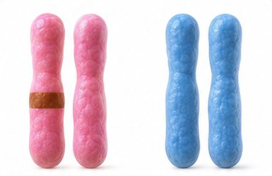
Deras anlag
Alla har två anlag för varje egenskap. Mamma har ett för fräknar och ett för inga fräknar, pappa har två för inga fräknar.
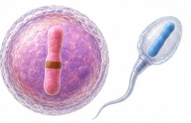
Könscellerna
Varje könscell får bara det ena av de två anlagen.
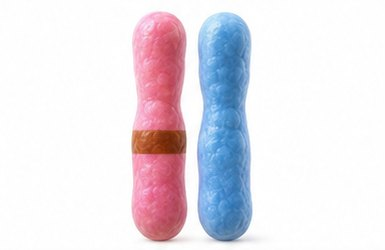
Barnets anlag
Barnet får ett anlag från varje förälder, här ett för fräknar och ett för inga.
Barnet får fräknar
Anlaget för fräknar är dominant, så det räcker med ett för att det ska synas. Anlaget för inga fräknar är vikande, vilket också kallas recessivt.
Dominant anlag skrivs med stor bokstav, F. Vikande (recessivt) anlag skrivs med liten bokstav, f.
Fräknar eller inte?
Välj vad anlagen ger.
Två anlag för fräknar.
Ett anlag av varje.
Två vikande (recessiva) anlag.
Samma sak som Ff, i annan ordning.
Hur ritar man ett korsningsschema?
- Man ritar ett korsningsschema som en ruta med fyra fält.
- Den ena förälderns två anlag skrivs ovanför rutan och den andras till vänster.
- Varje fält fylls med anlaget ovanför och anlaget till vänster.
- Fälten visar vilka anlag barnen kan få, och varje fält motsvarar 25 %.
- Varför: varje förälder ger bara ett av sina två anlag vidare, och slumpen avgör vilket. Schemat visar alla kombinationer som kan uppstå.
Exempel: mamma är Ff och har fräknar, pappa är ff och har inga.
Rita rutan
Rita en ruta med fyra fält.
Skriv föräldrarnas anlag
Mammans två anlag ovanför, ett över varje kolumn. Pappans två till vänster, ett vid varje rad.
Fyll i fälten
Varje fält får anlaget ovanför och anlaget till vänster.
Läs av resultatet
Varje fält är 25 %. Två av fyra fält är Ff, alltså är chansen 50 % att barnet får fräknar.
Rita ett eget schema
Välj en uppgift. Tryck på rutorna för att byta bokstav, först föräldrarnas anlag och sedan de fyra fälten.
Mammans anlag ovanför, pappans till vänster.
Vad är könsbundet arv?
- Könsbundet arv är arv av anlag som sitter på X-kromosomen.
- Varför pojkar drabbas: de har XY, alltså bara en X-kromosom, och Y-kromosomen har inget friskt anlag som kan dölja sjukdomsanlaget.
- Flickor har XX. Ett friskt anlag på den andra X-kromosomen väger upp, så de blir oftast anlagsbärare utan att själva bli sjuka.
Det grå bandet är ett sjukdomsanlag på X-kromosomen, till exempel anlaget för färgblindhet.
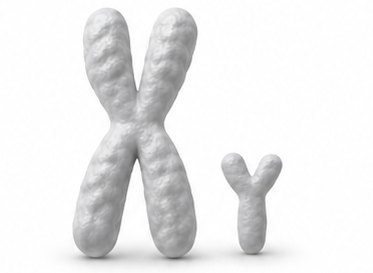
X och Y
Könskromosomerna. X är stor och har många gener, Y är liten och saknar de flesta av dem.
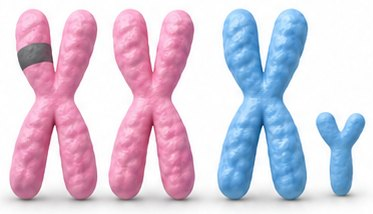
Föräldrarna
Mamma har anlaget på sin ena X-kromosom men är frisk, eftersom den andra har ett friskt anlag. Pappa har inget sjukdomsanlag.
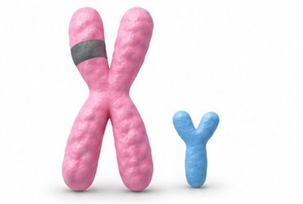
Sonen
Han fick mammas X med anlaget och pappas Y, som inte har något friskt anlag som kan väga upp.
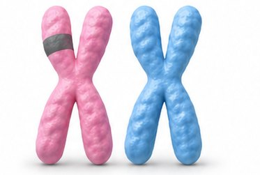
Dottern
Hon fick samma X från mamma men också ett friskt X från pappa, så hon blir anlagsbärare utan att bli sjuk.
Sjuk, bärare eller frisk?
Välj vad som händer.
Skriv själv
Varför drabbas pojkar oftare än flickor av sjukdomar som ärvs könsbundet? Förklara i flera led.
- Anlaget sitter på X-kromosomen.
- Pojkar har XY, alltså bara en X-kromosom.
- Y-kromosomen saknar genen, så det finns inget friskt anlag som kan väga upp.
- Flickor har två X-kromosomer, och det friska anlaget på den ena väger oftast upp anlaget på den andra.
- Därför räcker ett anlag för att en pojke ska drabbas, medan en flicka måste ha två.
Hur visar man könsbundet arv i ett korsningsschema?
- Man visar könsbundet arv genom att skriva anlaget som en liten bokstav uppe till höger om X, och Y utan bokstav.
- Mammans två X sätts ovanför rutan och pappans X och Y till vänster.
- Fälten fylls i som vanligt. Fält med två X är döttrar, fält med X och Y är söner.
- Schemat visar då att söner med anlaget på sitt X drabbas, medan döttrar med ett friskt X i stället bär anlaget.
- Varför bokstaven sitter på X: anlaget finns bara på X-kromosomen, och Y saknar genen.
Exempel: färgblindhet. Mamma är anlagsbärare, pappa ser färger normalt.
Skriv anlaget på X
Anlaget skrivs som en bokstav uppe till höger om X: F för friskt anlag, f för färgblindhet. Y får ingen bokstav, eftersom genen saknas där.
Skriv föräldrarna
Mammans två X-kromosomer ovanför. Pappans X och Y till vänster.
Fyll i fälten
Översta raden blir döttrar, eftersom de får pappas X. Nedersta raden blir söner, eftersom de får pappas Y.
Läs av resultatet
En av två söner blir färgblind. En av två döttrar blir anlagsbärare, men ingen dotter blir färgblind.
Vad betyder beteckningen?
Välj rätt beskrivning.
Område 6 · Genmodifiering
Vad är genmodifiering?
- Genmodifiering är att flytta en gen från en organism till en annan.
- Hur: genen klipps ut med gensaxen och sätts in i den andra organismens DNA.
- Det leder till att organismen får en ny egenskap, som också går i arv.
- Resultatet kallas en genmodifierad organism, GMO.
- Varför man gör det: med vanlig avel tar det många generationer, och egenskapen måste redan finnas inom arten. Med genmodifiering går det fort, och genen kan hämtas från en helt annan art.
Exempel: bomull som får en gen från en bakterie.
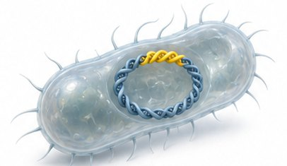
En gen med en bra egenskap
Bakterien har en gen, här gul, som gör ett ämne som dödar skadeinsekter.
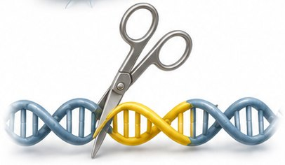
Genen klipps ut
Gensaxen klipper av DNA precis vid genen.
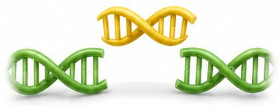
Genen sätts in
Genen fogas in i bomullsplantans DNA.
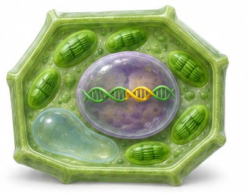
Växtcellen har en ny gen
Cellen läser den nya genen som vilken gen som helst och börjar göra samma ämne.
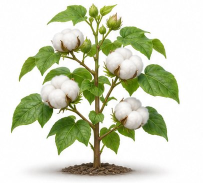
En planta med ny egenskap
Plantan skyddar sig själv mot insekterna, och egenskapen går i arv.
Sätt stegen i rätt ordning
Tryck på stegen i den ordning de sker.
Din ordning
Vilka exempel finns det på genmodifiering?
- Det finns fyra exempel att kunna: soja, potatis, lax och det gyllene riset.
- Soja har fått en gen som gör att den tål ett bekämpningsmedel. Det leder till att odlaren kan spruta mot ogräs utan att sojan dör.
- Potatis har fått en anti-frysgen. Det leder till att plantan klarar frost bättre.
- Lax har fått en gen som gör att den växer snabbare. Det leder till att den blir färdig på kortare tid.
- Det gyllene riset har fått gener som ger extra näring. Det skulle kunna minska undernäringen i fattiga länder.
Fyra exempel och vad de ska lösa.
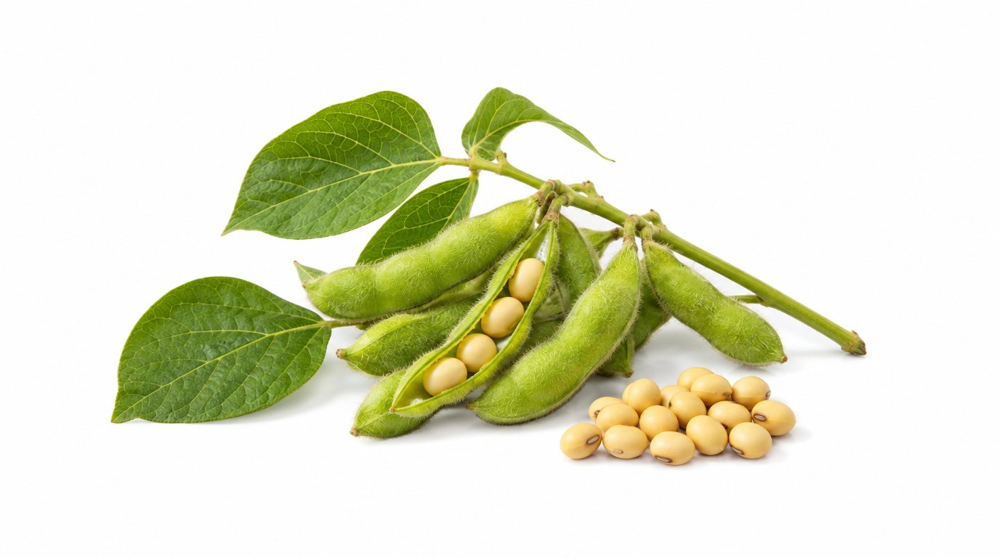
Soja
Sojabönor, i baljan och torkade. Soja är den vanligaste genmodifierade grödan, och det mesta blir djurfoder.
Potatis
En vanlig potatisplanta skadas när det blir rimfrost på bladen.
Lax
Två laxar som är lika gamla. Den övre är genmodifierad.

Ris
Samma sorts ris i båda skålarna. Den gula färgen kommer av näringsämnet som riset har fått.
Skriv själv
Välj ett av exemplen. Förklara vilket problem det ska lösa och hur. Skriv i flera led.
- Exempel: det gyllene riset.
- Problemet är att många människor i fattiga länder får för lite av ett viktigt näringsämne.
- Riset har fått gener som gör att det bildar näringsämnet.
- Det leder till att den som äter riset får i sig mer näring utan att behöva byta mat.
Vilka fördelar och nackdelar finns det med genmodifiering?
- Fördelarna med genmodifiering är större skördar, mindre bekämpningsmedel och snabbare resultat än med vanlig avel.
- Nackdelarna är att odlaren blir beroende av företaget som säljer utsädet, att ogräs kan bli motståndskraftiga och att generna kan spridas i naturen.
- Etiken: det är också en etisk fråga om vi har rätt att ändra på andra arter.
- Varför de måste vägas mot varandra: samma teknik ger både nytta och risker, och de drabbar olika: odlaren, naturen och den som äter maten.
- Slutsats: väg fördelarna mot nackdelarna och skriv vad du själv tycker.
Fyra områden. I varje område står fördelen till vänster och nackdelen till höger.
Skörden
Giftet
Naturen
Etiken
Skriv själv
Välj ett av de fyra områdena och skriv ett eget resonemang, ett led i varje ruta.
- Fördel: grödan klarar sig med mindre besprutning.
- Det leder till att odlaren och naturen utsätts för mindre gift.
- Å andra sidan kan ogräs som överlever bli motståndskraftiga, och då behövs mer gift igen.
- Min slutsats: jag tycker att fördelen väger tyngre, så länge man håller koll på att ogräset inte blir motståndskraftigt.
Område 7 · Begreppen
Vilket begrepp är det?
Läs förklaringen och välj rätt ord. Alla 35 begreppen kommer från kapitlets begreppslista.
Varför? På provet ska du använda rätt ord när du förklarar. Kan du orden blir svaren både kortare och tydligare.
Läran om ärftlighet, alltså hur generna för det biologiska arvet vidare.
Ett bestämt avsnitt av DNA som är receptet på ett visst protein.
Den jättelika molekyl som innehåller arvsmassan. Den ser ut som en vriden repstege.
En av de fyra "bokstäverna" i DNA: A, T, C och G.
Två kvävebaser som sitter ihop i DNA. A sitter alltid med T, och C med G.
Ett avsnitt av DNA, alltså en viss följd av kvävebaser.
Allt DNA i en cell, både generna och det som ligger mellan dem.
Ämnen som bygger upp kroppen och sköter dess arbete. De består av långa kedjor av aminosyror.
Att en gen kodar för ett protein betyder att genen innehåller receptet på just det proteinet.
Byggstenarna som proteiner sätts ihop av. Det finns 20 olika.
Tre kvävebaser i följd i en genkopia. Varje sådan grupp står för en bestämd aminosyra.
Den del av cellen där proteinerna byggs, utanför cellkärnan.
En bunt av tätt hoplindat DNA. Människan har 46 i varje kroppscell.
Två kromosomer som hör ihop, en från mamma och en från pappa. Människan har 23 sådana.
När en kroppscell delar sig till två likadana celler med 46 kromosomer var. Kallas också mitos.
Delningen som bildar könsceller. Antalet kromosomer halveras från 46 till 23. Kallas också meios.
En spermie eller en äggcell. Den har 23 kromosomer.
Kromosomerna i det 23:e paret, som avgör biologiskt kön. Flickor har XX och pojkar XY.
En av de två varianterna av en gen i ett genpar, en från vardera föräldern. Kallas också anlag.
Ett anlag som alltid slår igenom, även om man bara har fått det från en förälder.
Ett anlag som bara slår igenom om man har fått det från båda föräldrarna. Kallas också recessivt.
En ruta med fyra fält som visar vilka kombinationer av anlag ett barn kan få från sina föräldrar.
Arv av anlag som sitter på X-kromosomen. De slår oftast igenom hos pojkar, som bara har en X-kromosom.
En person som har ett vikande sjukdomsanlag utan att själv vara sjuk, men som kan föra det vidare.
En bestående förändring i arvsmassan.
Att medvetet korsa djur för att de ska få önskade egenskaper.
Att medvetet korsa växter för att de ska få önskade egenskaper.
En teknik för att klippa i DNA, till exempel för att flytta en gen från en organism till en annan.
Att flytta en gen från en art till en annan för att ändra artens egenskaper.
Förkortning för genmodifierad organism.
En art som hamnar i ett ekosystem där den saknar fiender och därför breder ut sig kraftigt.
En gen som hindrar iskristaller från att växa sig stora, så att organismen tål kyla.
En gröda som har genmodifierats så att den tål ett visst bekämpningsmedel.
Odling där man byter gröda mellan åren och väljer sorter med naturlig motståndskraft.
Ett genmodifierat ris som innehåller mycket vitamin A.